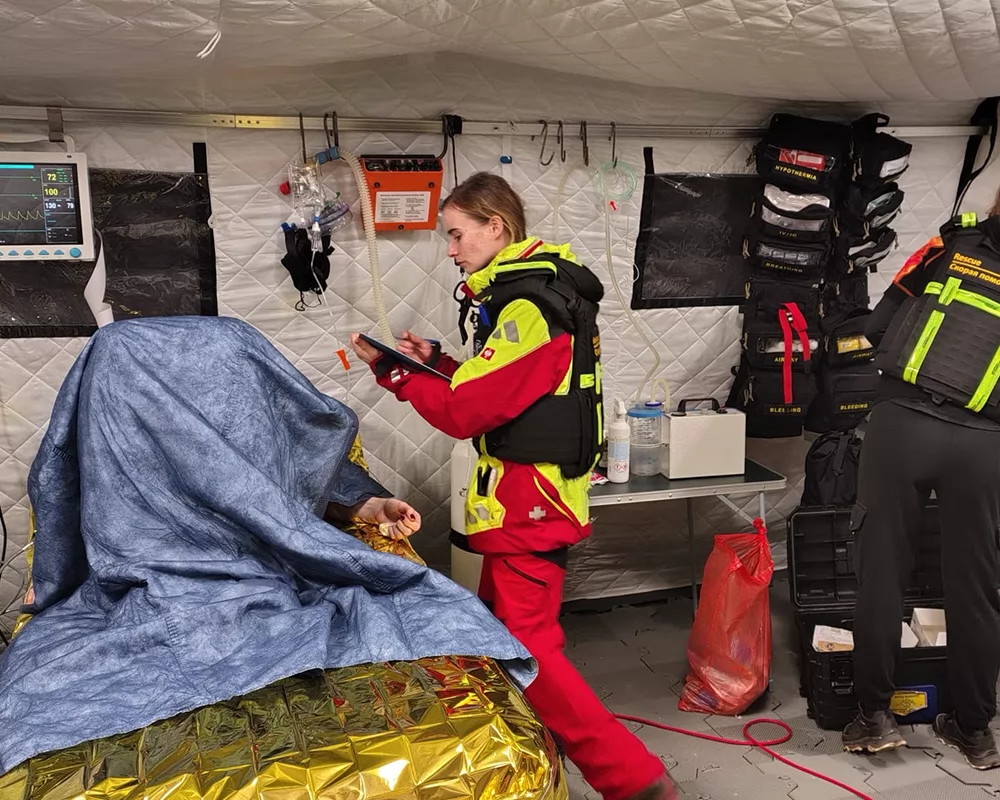

Zdravotnická a přednemocniční péče v krizových podmínkách

Vyhleávání a vyprošťování osob v extrémním a obtížně přítupném terénu
Podpora evakuačních a humanitárních operací
Zdravotnické a logistické zabezpečení v odlehlých lokalitách